Overview
In this project, we utilized de Casteljau's algorithm to draw Bezier curves and surfaces, and
implemented various operations for modifying triangle meshes. While implementing Bezier curves
were straightforward, it was interesting to see how it could be expanded to drawing the Bezier
surface as well.
We found it difficult to implement the triangle mesh functions due to it being hard to visualize
the relationships between various arbitrary mesh elements and determine the cause of visual artifacts.
Especially with the loop subdivision section, it was unclear which part of the implementation was
broken and causing the image to become spiky (it ended up being that we iterated through halfedges
incorrectly, doing halfedge->vertex->halfedge and expecting it to go back to the original halfedge).
Section I: Bezier Curves and Surfaces
Part 1: Bezier Curves with 1D de Casteljau Subdivision
Briefly explain de Casteljau's algorithm and how you implemented it in order to evaluate Bezier curves.
de Casteljau's algorithm consists of recursively dividing lines into segments by a proportion t
(so that one segment has length l*t and the other has length l*(1-t)),
then drawing a new line through the divisions, until there is one line left. The corresponding
division point of that line is a spot on the bezier curve.
To implement this, we store the list of vertices, construct line segments, and then perform the
recursive division and construction as described above. As t changes from 0 to 1, the final
point drawn traces the shape of the bezier curve, so we can draw the curve by drawing all points
corresponding to 0 < t < 1.
Take a look at the provided .bzc files and create your own Bezier curve with 6 control points of your choosing. Use this Bezier curve for your screenshots below.
Show screenshots of each step / level of the evaluation from the original control points down to the final evaluated point. Press E to step through. Toggle C to show the completed Bezier curve as well.
|
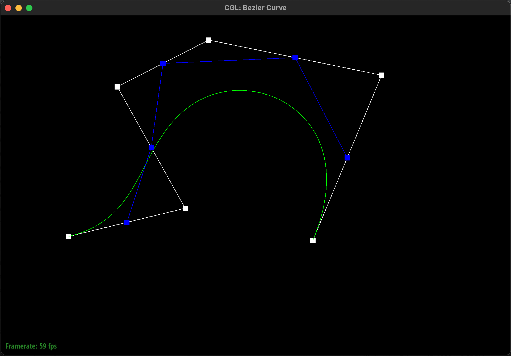
|
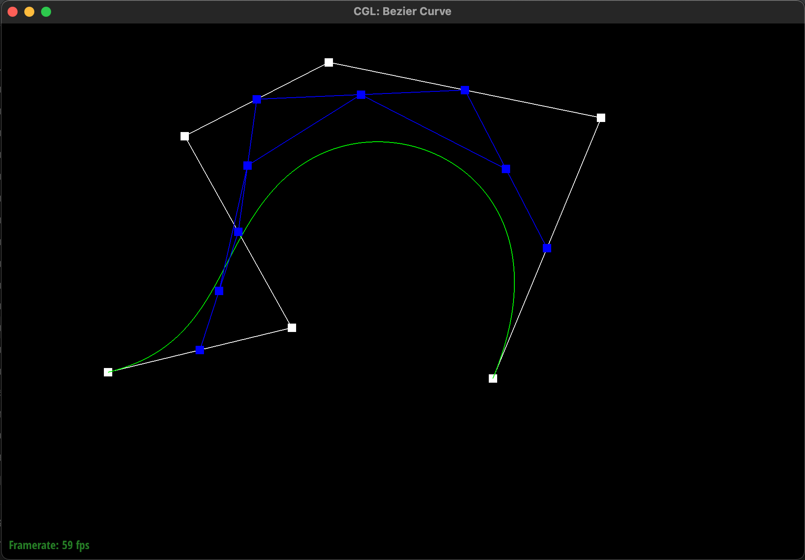
|
|
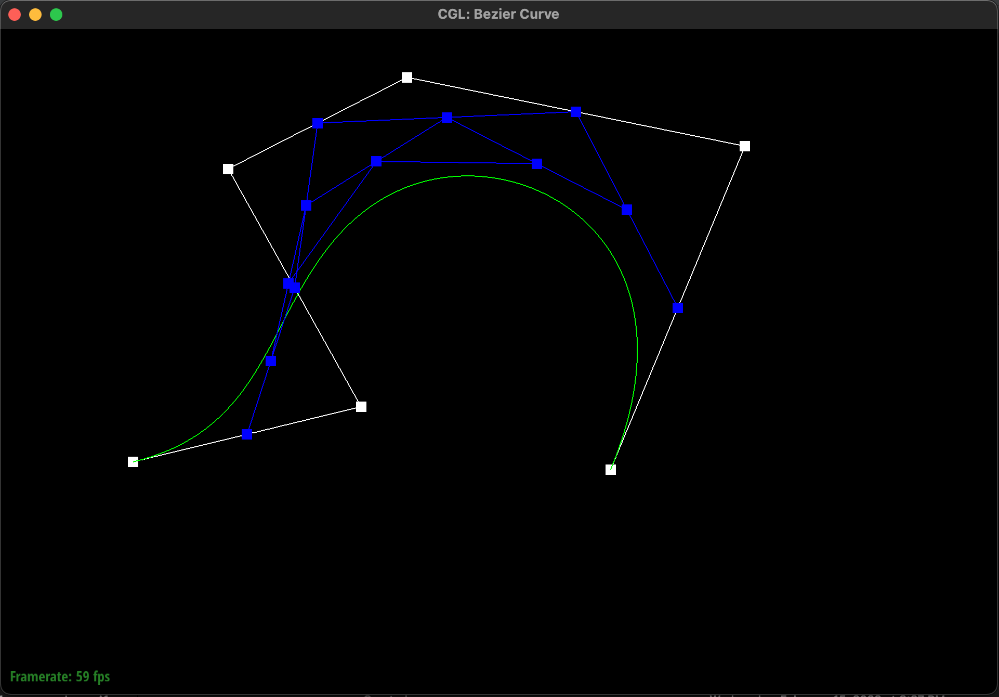
|
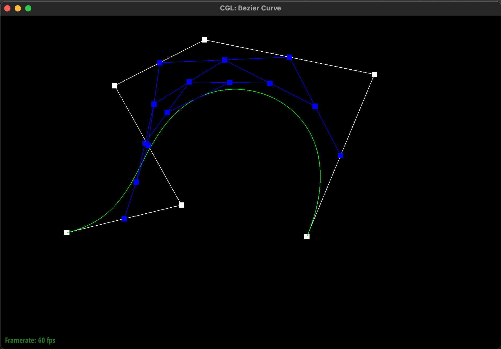
|
|
|
Show a screenshot of a slightly different Bezier curve by moving the original control points around and modifying the parameter \(t\) via mouse scrolling.
Part 2: Bezier Surfaces with Separable 1D de Casteljau
Briefly explain how de Casteljau algorithm extends to Bezier surfaces and how you implemented it in order to evaluate Bezier surfaces.To extend de Casteljau's algorithm to a surface, we first use de Casteljau's algorithm with parameter u to get a set of bezier curves, which are defined by their control points. We then re-run the algorithm on that set of points with parameter v, which gives a point on the bezier surface. Since our point is parameterized by both u and v, we know that this point corresponds to the point (u, v) on the bezier surface.
Show a screenshot of bez/teapot.bez (not .dae) evaluated by your implementation.
Section II: Triangle Meshes and Half-Edge Data Structure
Part 3: Area-Weighted Vertex Normals
Briefly explain how you implemented the area-weighted vertex normals.We first iterate through all of the adjacent triangles to the vertex and grab the area and normal of those triangles. We then calculate the area-weighted vertex normal by multiplying those values together and aggregating them, then normalizing it.
Show screenshots of dae/teapot.dae (not .bez) comparing teapot shading with and without vertex normals. Use Q to toggle default flat shading and Phong shading.
|
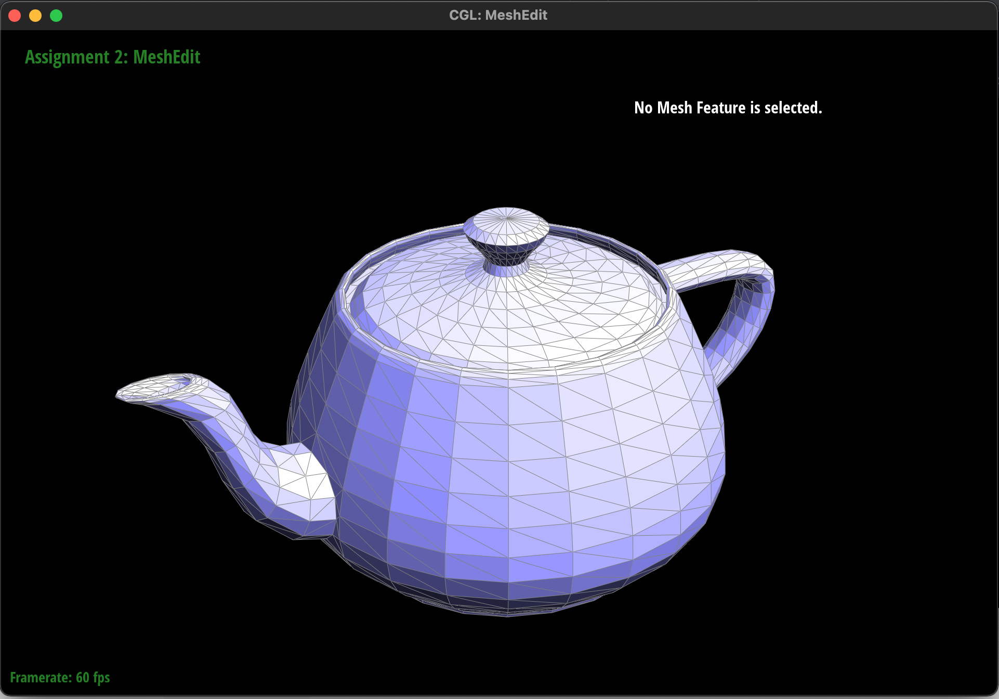
|

|
Part 4: Edge Flip
Briefly explain how you implemented the edge flip operation and describe any interesting implementation / debugging tricks you have used.
To implement edge flipping, we first initialized all of the relevant vertices, edges, faces, and halfedges
and labelled them so that we would not lose track of what should go where. We then assigned all
relevant data to their respective mesh elements by following the diagram in the problem. Because we
reassigned everything, there were no problems caused by forgetting to assign an element to its new
states.
While implementing this feature, there were problems with triangles disappearing and leaving a hole
in the mesh. We used the check_for() function on every element to make sure it was connected to the right
number of other elements, and found that certain halfedges pointed to the wrong next halfedge.
Show screenshots of the teapot before and after some edge flips.
|
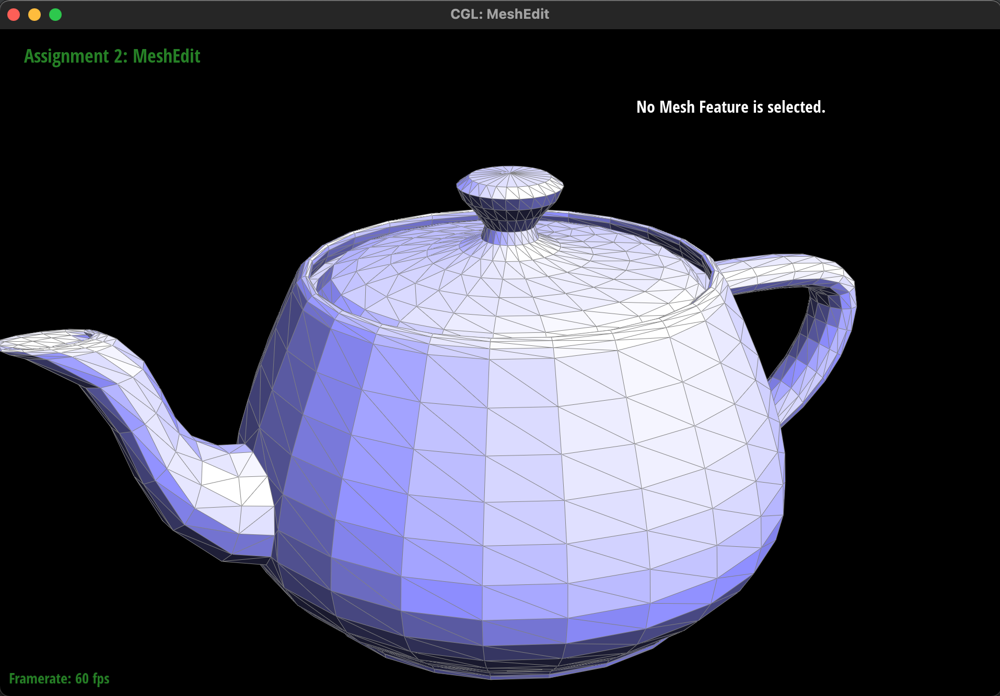
|
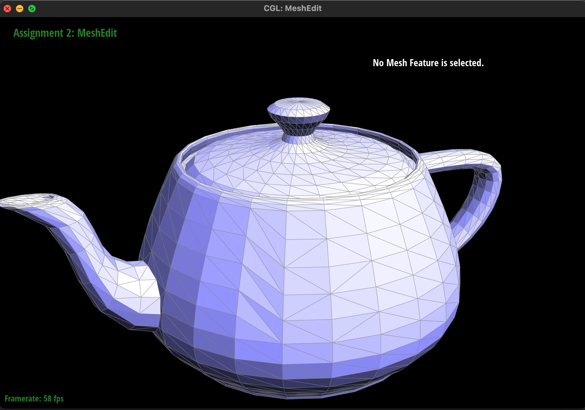
|
Part 5: Edge Split
Briefly explain how you implemented the edge split operation and describe any interesting implementation / debugging tricks you have used.
Similarly to edge flips, we first initialize all mesh elements and label them, then constructed
all neccesary new mesh elements (the additional vertex, 2 faces, 3 edges, and their respective
halfedges). We then assigned all elements according to the diagram given in the problem. Because this
problem was similar to the previous problem, we used mostly the same format and only modified a few
elements which pointed to the wrong element. The majority of the new work was assigning pointers to
the newly constructed elements.
Since this problem was similar to the previous task, it was fairly straightforward to implement
and only required making sure that every element pointed to the right number of other elements.
Show screenshots of a mesh before and after some edge splits.
|
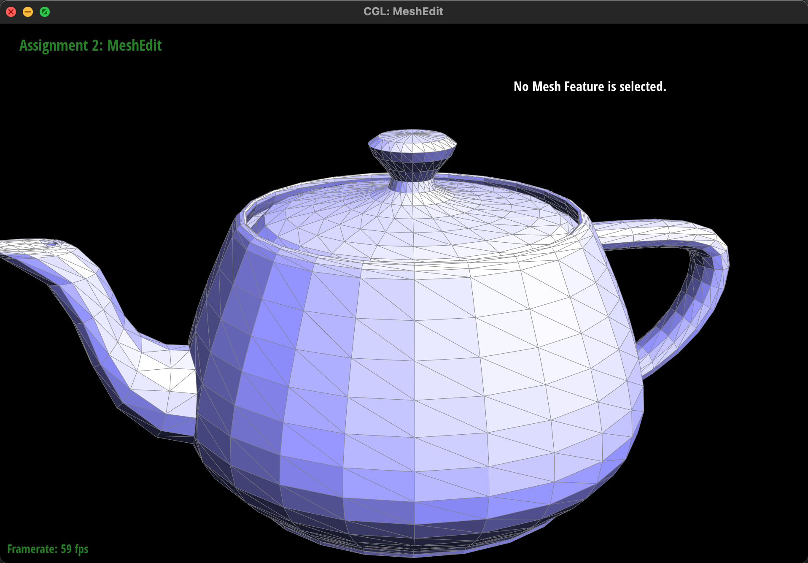
|
|
Show screenshots of a mesh before and after a combination of both edge splits and edge flips.
|
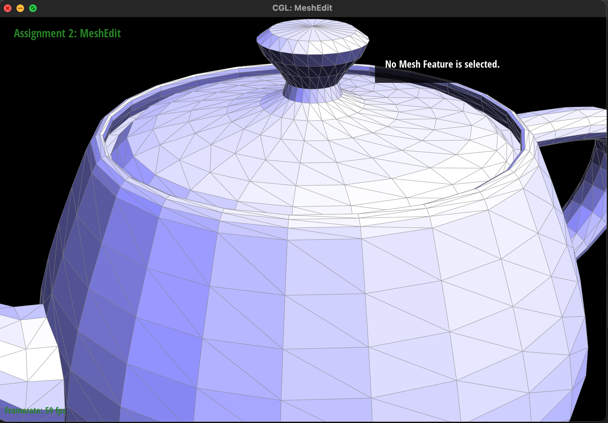
|
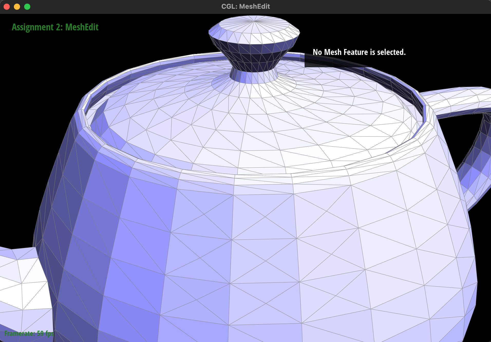
|
|
Part 6: Loop Subdivision for Mesh Upsampling
Briefly explain how you implemented the loop subdivision and describe any interesting implementation / debugging tricks you have used.
To implement loop subdivision, we first computed the new positions for all vertices in the original mesh,
where the new position was a sort of weighted average of its adjacent vertices and its original position.
We then calculated the position of any vertices that would be created, using another weighted average
of the vertices around the edge that would be split. We then iterated through every edge in the original
mesh and split it using the function from part 5. Because this splitting also created new edges that
would be added to the list to iterate through, we made sure to mark those edges as new and to not
split them further, preventing an infinite loop. After splitting an edge we store the position calculated
in the previous step inside the vertex (but not actually updating the position of the vertex yet). We then
flipped any new edge that connected an old and a new vertex. Finally, we updated all vertex positions with
the precomputed and stored values.
While debugging, we found that while it didn't seem like which halfedge a newly created vertex pointed to
would matter, it did cause our implementation to be off as the adjacent vertex that we thought was
close by was actually further away. Additionally, some of the hafledges were originally accessed using
edge->hafledge->vertex->halfedge (which was thought to be equivalent to edge->halfedge), but this resulted
in giving a different halfedge than expected because the halfedge tied to a vertex is basically random.
To debug problems we used the edge inspector and recorded the addresses of specific mesh elements, then
found them again after doing the loop subdivision process and checked if they were the expected values.
Take some notes, as well as some screenshots, of your observations on how meshes behave after loop subdivision. What happens to sharp corners and edges? Can you reduce this effect by pre-splitting some edges?
When we perform loop subdivision on the torus, it becomes more rounded and loses its hexagonal shape.
|
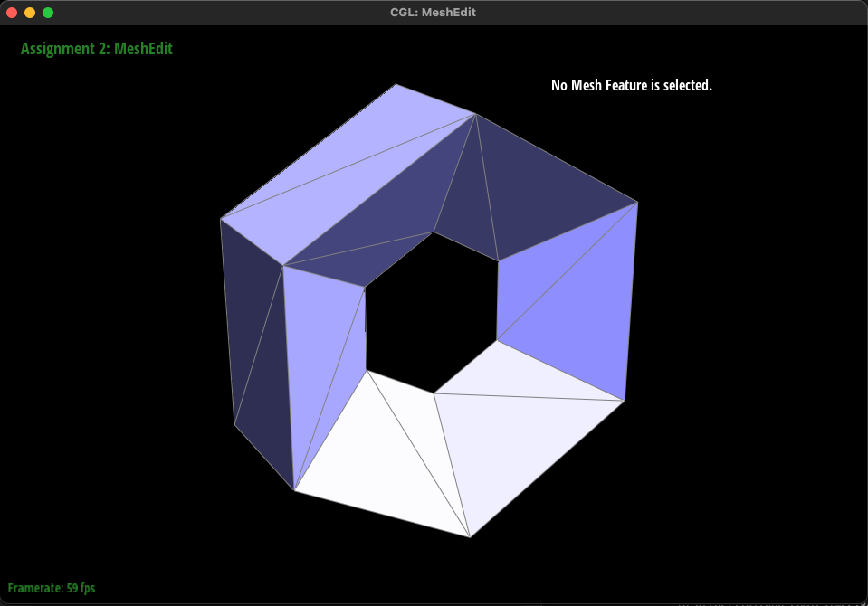
|
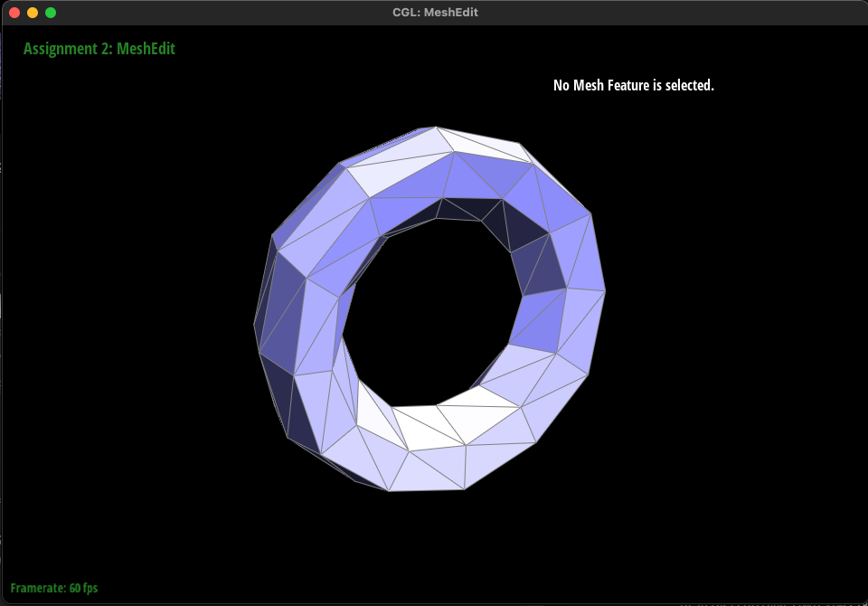
|
|
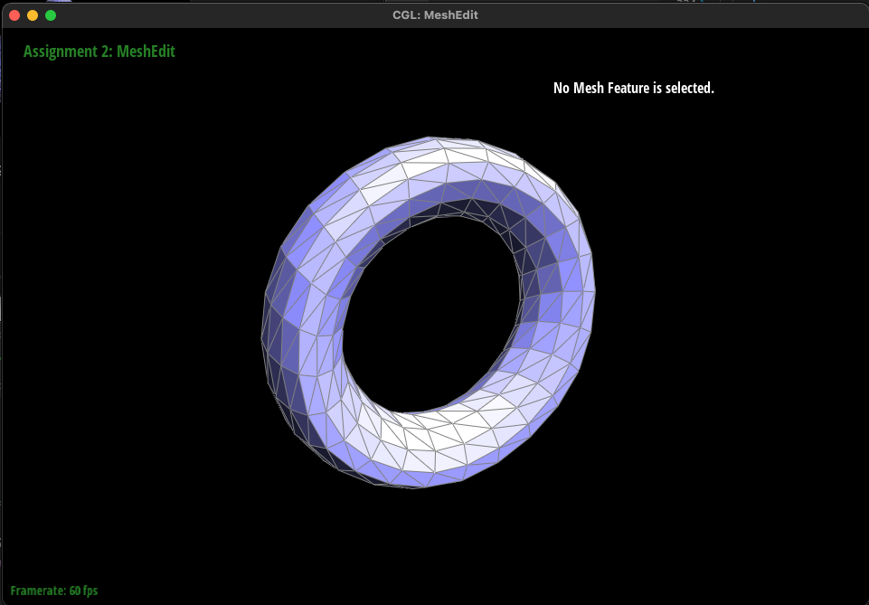
|
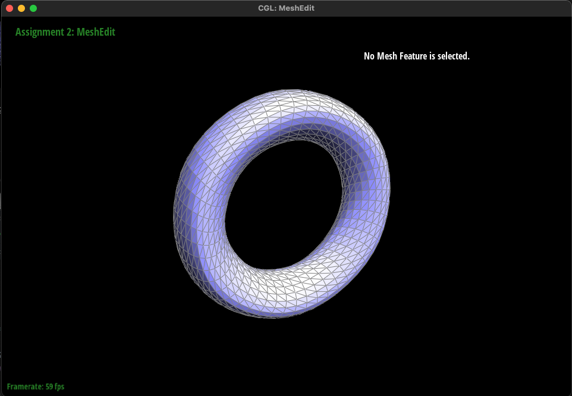
|
However, if we pre-split some edges on one side of the torus, it does not lose its shape on those side:
|
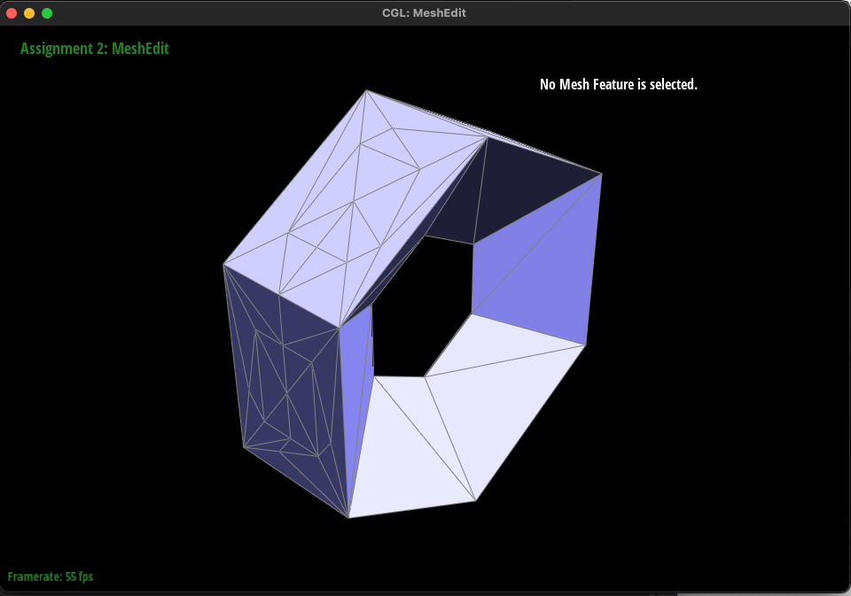
|
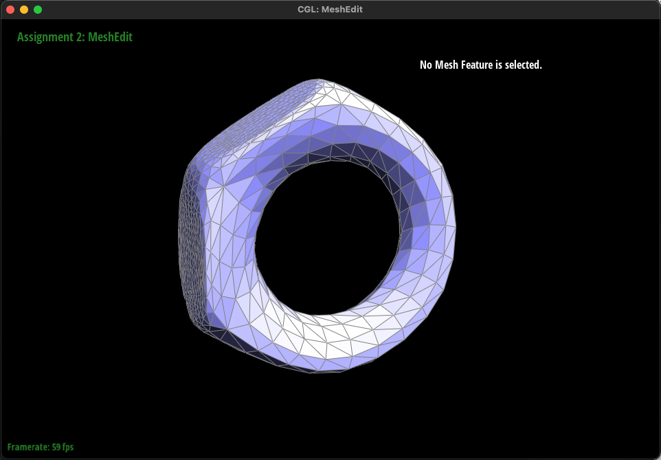
|
Load dae/cube.dae. Perform several iterations of loop subdivision on the cube. Notice that the cube becomes slightly asymmetric after repeated subdivisions. Can you pre-process the cube with edge flips and splits so that the cube subdivides symmetrically? Document these effects and explain why they occur. Also explain how your pre-processing helps alleviate the effects.
We see that repeated subdivision of the cube results in an asymmetric shape:
|
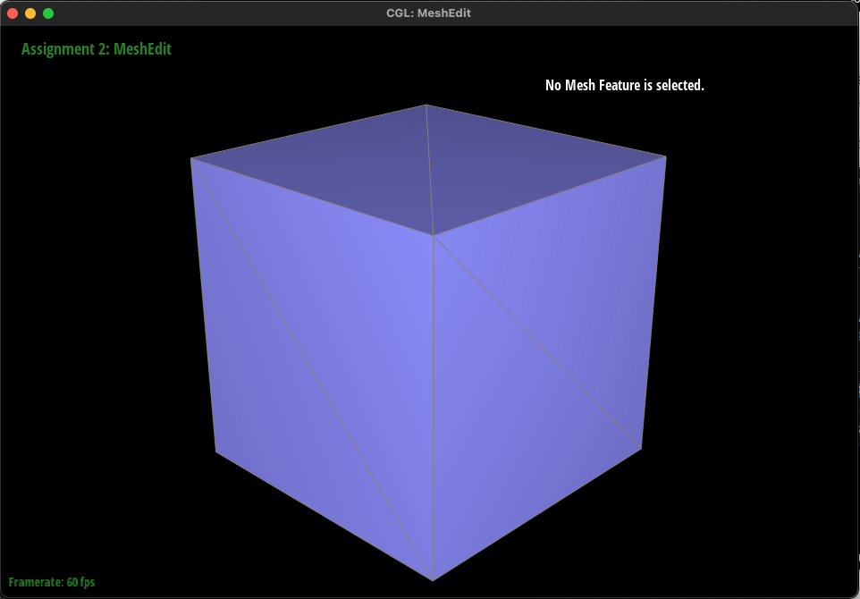
|
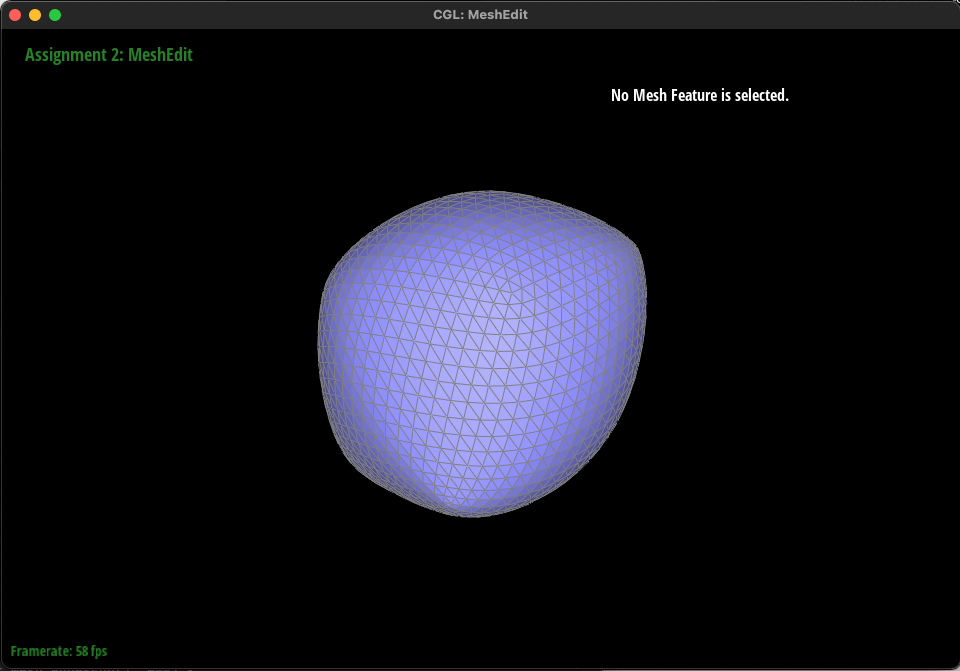
|
This is due to the cube originally having an asymmetric set of triangles; each face is initially only split across 1 diagonal. We can preprocess the cube by splitting each face into 4 triangles, which removes the asymmetry of the diagonal. We see that this results in a much smoother shape:
|
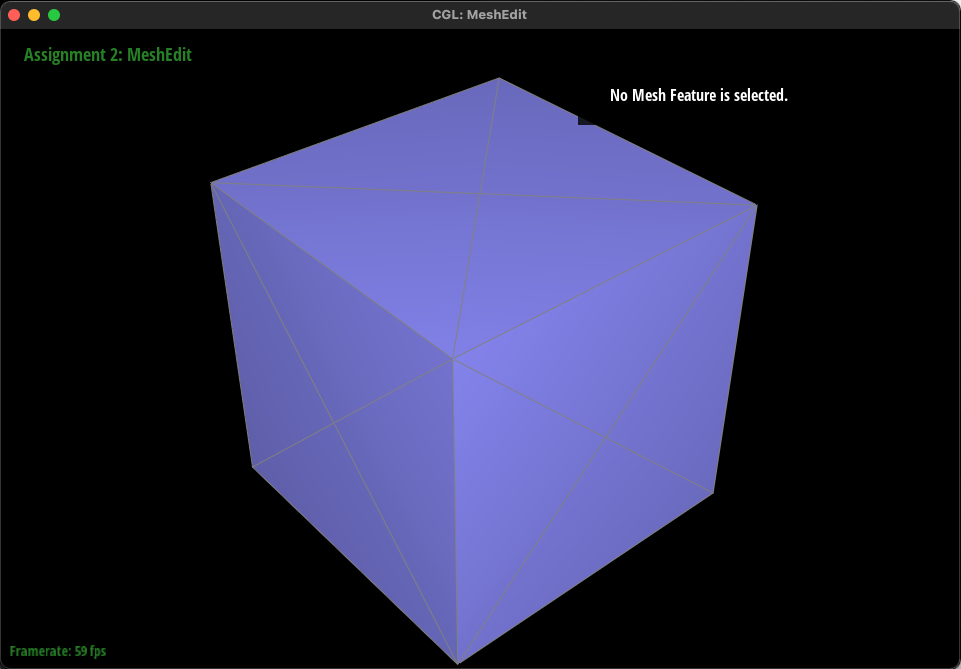
|
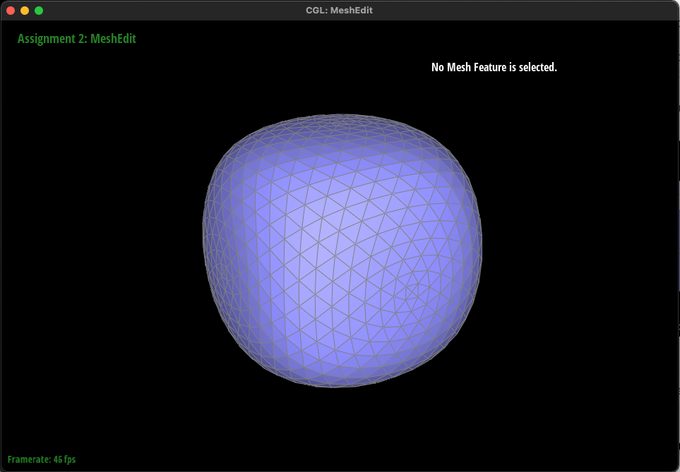
|
Link to webpage: https://cal-cs184-student.github.io/takethedigitalprivacydecal-webpage/proj2/index.html